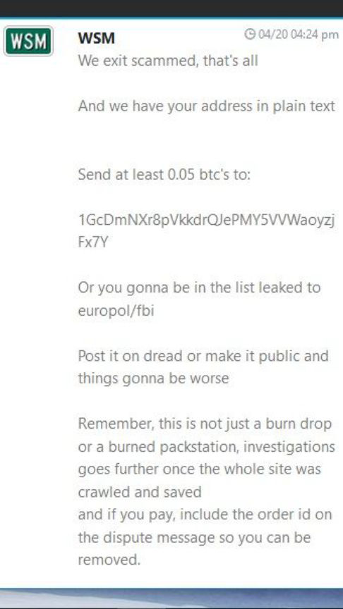
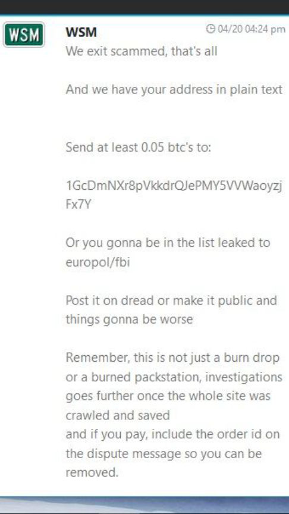

Brief Update: Wallstreet Market Has Exit Scammed
~1 min read | Published on 2019-04-21, tagged Darkweb-Market, Exit-Scammed, General-News using 192 words.
Wallstreet Market, the most prolific darkweb maketplace, has exit-scammed and stolen millions of dollars in Bitcoin and Monero.
This post serves as a temporary warning NOT to use Wallstreet Market. A more in-depth article will follow.
WARNING: A support staff member is now black mailing customers who sent their address in plaintext, via disputes and tickets.
Hugbunter, the creator of Dread, wrote in a post on his forum.
We can be 99% sure at this point they aren’t coming back. Whilst their explanation was somewhat plausible at first, that was diminished as time went by and their Admin has not contacted me for almost 72 hours now, yet coins have been moving.
Below is one of the first messages posted by Wallstreet Market support after users noticed that the market had moved millions of dollars from escrow accounts into a single wallet owned by Wallstreet Market.
Here is a heavily redacted screenshot sent to a customer on Wallstreet Market by Wallstreet Market staff members.
Here’s a screenshot of the money moving through an address linked to the Wallstreet Market admins.
This exists only as a temporary placeholder in order to prevent users from making additional purchases on the market.
This post serves as a temporary warning NOT to use Wallstreet Market. A more in-depth article will follow.
WARNING: A support staff member is now black mailing customers who sent their address in plaintext, via disputes and tickets.
Hugbunter, the creator of Dread, wrote in a post on his forum.
We can be 99% sure at this point they aren’t coming back. Whilst their explanation was somewhat plausible at first, that was diminished as time went by and their Admin has not contacted me for almost 72 hours now, yet coins have been moving.
Below is one of the first messages posted by Wallstreet Market support after users noticed that the market had moved millions of dollars from escrow accounts into a single wallet owned by Wallstreet Market.
Here is a heavily redacted screenshot sent to a customer on Wallstreet Market by Wallstreet Market staff members.
Here’s a screenshot of the money moving through an address linked to the Wallstreet Market admins.
This exists only as a temporary placeholder in order to prevent users from making additional purchases on the market.